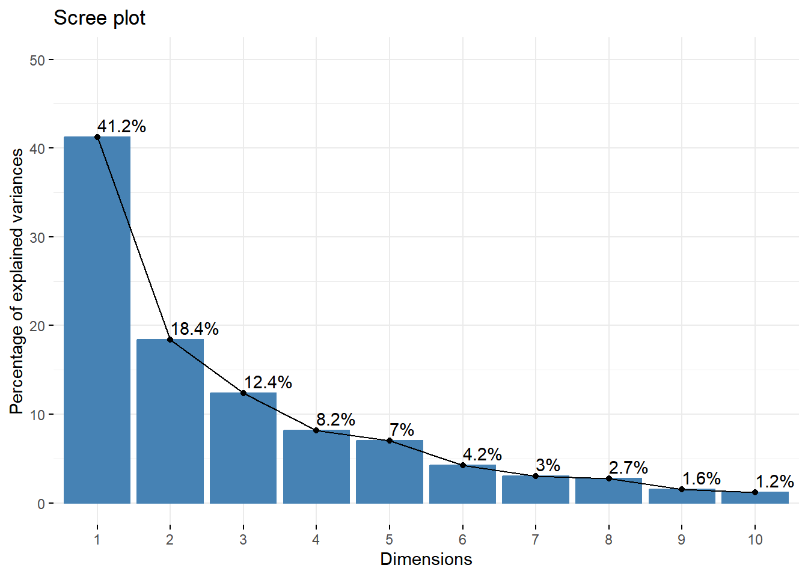

Código
# Carregando os pacotes
library(FactoMineR)
library(factoextra)
library(corrplot)
library(knitr)Aplicação ao conjunto de dados de decatlo
A Análise de Componentes Principais (PCA) é uma técnica estatística multivariada utilizada para reduzir a dimensionalidade de um conjunto de dados, preservando o máximo de variabilidade possível. Neste documento, realizaremos uma PCA utilizando os dados do decatlo, aplicando os pacotes FactoMineR e factoextra no R.
Para realizar a análise, precisamos carregar os pacotes que contêm as funções necessárias.
# Carregando os pacotes
library(FactoMineR)
library(factoextra)
library(corrplot)
library(knitr)Utilizaremos o conjunto de dados decathlon2, disponível no pacote FactoMineR.
data(decathlon2)
# Visualizando as primeiras linhas dos dados
head(decathlon2) X100m Long.jump Shot.put High.jump X400m X110m.hurdle Discus
SEBRLE 11.04 7.58 14.83 2.07 49.81 14.69 43.75
CLAY 10.76 7.40 14.26 1.86 49.37 14.05 50.72
BERNARD 11.02 7.23 14.25 1.92 48.93 14.99 40.87
YURKOV 11.34 7.09 15.19 2.10 50.42 15.31 46.26
ZSIVOCZKY 11.13 7.30 13.48 2.01 48.62 14.17 45.67
McMULLEN 10.83 7.31 13.76 2.13 49.91 14.38 44.41
Pole.vault Javeline X1500m Rank Points Competition
SEBRLE 5.02 63.19 291.7 1 8217 Decastar
CLAY 4.92 60.15 301.5 2 8122 Decastar
BERNARD 5.32 62.77 280.1 4 8067 Decastar
YURKOV 4.72 63.44 276.4 5 8036 Decastar
ZSIVOCZKY 4.42 55.37 268.0 7 8004 Decastar
McMULLEN 4.42 56.37 285.1 8 7995 DecastarAntes de realizar a PCA, é importante entender a estrutura dos dados.
O conjunto de dados decathlon2 contém resultados de atletas em 10 provas de decatlo, além de informações adicionais.
Selecionaremos apenas as variáveis numéricas referentes às provas.
decathlon_data <- decathlon2[1:23, 1:10]Aplicamos a função PCA do pacote FactoMineR para executar a análise.
res.pca <- PCA(decathlon_data, graph = FALSE)Analisamos os autovalores para entender a proporção de variância explicada por cada componente principal. A tabela de autovalores e variância explicada (Tabela 1) serve para avaliar a importância de cada componente principal na Análise de Componentes Principais (PCA). Os autovalores (eigenvalue) representam a quantidade de variância original dos dados que é capturada por cada componente principal. A variância explicada, expressa em porcentagem, indica a proporção da variância total dos dados que é retida por cada componente.
eig.val <- get_eigenvalue(res.pca)
kable(eig.val, caption = "Autovalores e Variância Explicada")| eigenvalue | variance.percent | cumulative.variance.percent | |
|---|---|---|---|
| Dim.1 | 4.1242133 | 41.242134 | 41.24213 |
| Dim.2 | 1.8385309 | 18.385309 | 59.62744 |
| Dim.3 | 1.2391403 | 12.391403 | 72.01885 |
| Dim.4 | 0.8194402 | 8.194402 | 80.21325 |
| Dim.5 | 0.7015528 | 7.015528 | 87.22878 |
| Dim.6 | 0.4228828 | 4.228828 | 91.45760 |
| Dim.7 | 0.3025817 | 3.025816 | 94.48342 |
| Dim.8 | 0.2744700 | 2.744700 | 97.22812 |
| Dim.9 | 0.1552169 | 1.552169 | 98.78029 |
| Dim.10 | 0.1219710 | 1.219710 | 100.00000 |
A tabela indica que os primeiros três a cinco componentes principais capturam a maior parte da variabilidade dos dados do decatlo. Portanto, ao focar nesses componentes, conseguimos simplificar a estrutura dos dados, facilitando a visualização e interpretação, sem perder informações significativas
O Scree Plot ajuda a visualizar a quantidade de variância explicada.
fviz_eig(res.pca, addlabels = TRUE, ylim = c(0, 50))
Analisamos as contribuições das variáveis originais para os componentes principais.
var <- get_pca_var(res.pca)
kable(var$coord, caption = "Cargas Fatoriais das Variáveis")| Dim.1 | Dim.2 | Dim.3 | Dim.4 | Dim.5 | |
|---|---|---|---|---|---|
| X100m | -0.8506257 | -0.1793981 | 0.3015564 | 0.0335732 | -0.1944440 |
| Long.jump | 0.7941806 | 0.2808570 | -0.1905465 | -0.1153896 | 0.2331567 |
| Shot.put | 0.7339127 | 0.0854041 | 0.5175978 | 0.1284684 | -0.2488129 |
| High.jump | 0.6100840 | -0.4652142 | 0.3300852 | 0.1445501 | 0.4027002 |
| X400m | -0.7016034 | 0.2901783 | 0.2835329 | 0.4308255 | 0.1039085 |
| X110m.hurdle | -0.7641252 | -0.0247408 | 0.4488873 | -0.0168959 | 0.2242200 |
| Discus | 0.7432090 | 0.0496609 | 0.1765252 | 0.3950092 | -0.4082391 |
| Pole.vault | -0.2172680 | 0.8074511 | 0.0940577 | -0.3389848 | -0.2216853 |
| Javeline | 0.4282266 | 0.3861093 | 0.6041243 | -0.3317345 | 0.1978128 |
| X1500m | 0.0042785 | 0.7844802 | -0.2194707 | 0.4480096 | 0.2632527 |
Visualizamos as correlações entre as variáveis e os componentes principais.
fviz_pca_var(res.pca, col.var = "contrib")Geramos uma matriz de correlação para entender as relações entre as variáveis.
corrplot(cor(decathlon_data), method = "circle")O gráfico biplot permite visualizar simultaneamente as variáveis e os indivíduos em um mesmo plano, facilitando a interpretação das relações entre eles.
fviz_pca_biplot(res.pca,
repel = TRUE,
col.var = "#2E9FDF", # Cor das variáveis
col.ind = "#696969") # Cor dos indivíduosNo biplot acima, as setas representam as variáveis originais, enquanto os pontos correspondem aos indivíduos (atletas). A proximidade entre um indivíduo e uma variável indica um alto valor nessa variável para o indivíduo em questão. Além disso, o ângulo entre as setas das variáveis indica a correlação entre elas. Variáveis com setas próximas indicam alta correlação positiva, enquanto setas em direções opostas indicam correlação negativa.
Examinamos as coordenadas dos indivíduos nos componentes principais.
ind <- get_pca_ind(res.pca)
kable(ind$coord, caption = "Coordenadas dos Indivíduos")| Dim.1 | Dim.2 | Dim.3 | Dim.4 | Dim.5 | |
|---|---|---|---|---|---|
| SEBRLE | 0.1955047 | 1.5890567 | 0.6424912 | 0.0838965 | 1.1682939 |
| CLAY | 0.8078795 | 2.4748137 | -1.3873827 | 1.2983823 | -0.8249821 |
| BERNARD | -1.3591340 | 1.6480950 | 0.2005584 | -1.9640942 | 0.0841935 |
| YURKOV | -0.8889532 | -0.4426067 | 2.5295843 | 0.7129084 | 0.4078226 |
| ZSIVOCZKY | -0.1081216 | -2.0688377 | -1.3342591 | -0.1015280 | -0.2014522 |
| McMULLEN | 0.1212195 | -1.0139102 | -0.8625170 | 1.3416429 | 1.6215129 |
| MARTINEAU | -2.4461206 | -1.3138017 | 0.9183545 | 0.3814830 | -2.2937703 |
| HERNU | -1.9335505 | 1.2049469 | 0.1599256 | 0.9113324 | -0.1295897 |
| BARRAS | -1.8143379 | -0.4218036 | -0.6729699 | 0.2338693 | -0.2390921 |
| NOOL | -2.8394182 | -1.6080212 | -0.6208959 | -1.5904398 | 1.4561921 |
| BOURGUIGNON | -4.5129309 | 1.2919755 | 0.0102629 | 0.6817399 | 0.4285722 |
| Sebrle | 3.5290188 | 1.2442692 | 1.7158834 | -0.8268824 | -0.0256161 |
| Clay | 3.3907555 | 1.6597737 | 0.6323029 | -0.3239190 | 0.5819564 |
| Karpov | 4.1618361 | -0.8162937 | -1.0378288 | 0.3204063 | -0.8153479 |
| Macey | 1.8900060 | -2.1102680 | 1.0012937 | 0.5978315 | -0.0002206 |
| Warners | 1.4185318 | 0.2882441 | -2.0446388 | -1.0425133 | -0.0414513 |
| Zsivoczky | 0.4821513 | -0.9475719 | 1.7669951 | -0.1889854 | 0.4164570 |
| Hernu | 0.2825218 | -1.1919254 | -0.1743971 | -0.8677682 | -0.7049754 |
| Bernard | 1.3979877 | -1.5112538 | -0.8500641 | 0.7620663 | 0.8791254 |
| Schwarzl | -0.7262410 | 0.6732231 | -1.0641424 | -0.9480131 | -0.2952465 |
| Pogorelov | -0.2191699 | 0.8804077 | -0.3042988 | 1.3860697 | -0.0153914 |
| Schoenbeck | -0.5064487 | 1.3292713 | -0.1053186 | -0.2548795 | -0.6597270 |
| Barras | -0.3229862 | -0.8377832 | 0.8810612 | -0.6026055 | -0.7972634 |
Visualizamos a distribuição dos atletas nos componentes principais.
fviz_pca_ind(res.pca,
col.ind = "cos2",
gradient.cols = c("#00AFBB", "#E7B800", "#FC4E07"),
repel = TRUE)Explicar o que é o cos2 e oque significa para análise. xxxxxxxxxxxxxxxxxxxxxxxxxxxxxxxxxxxxxx
A PCA permitiu reduzir a dimensionalidade dos dados do decatlo, identificando os componentes principais que explicam a maior parte da variabilidade. As análises gráficas e numéricas auxiliaram na interpretação dos resultados, evidenciando as relações entre as provas e o desempenho dos atletas.
Lê, S., Josse, J., & Husson, F. (2008). FactoMineR: An R package for multivariate analysis. Journal of Statistical Software, 25(1), 1-18.
Kassambara, A., & Mundt, F. (2020). factoextra: Extract and visualize the results of multivariate data analyses. R package version 1.0.7.